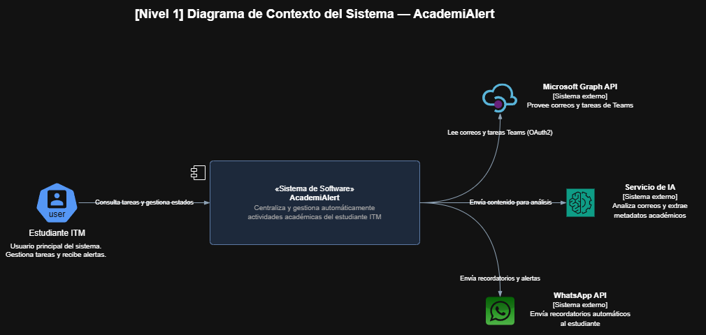
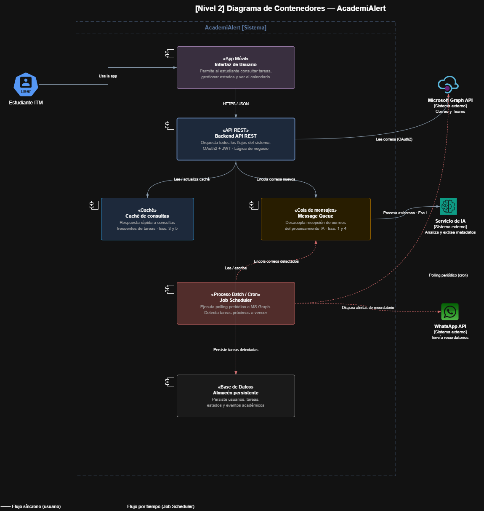
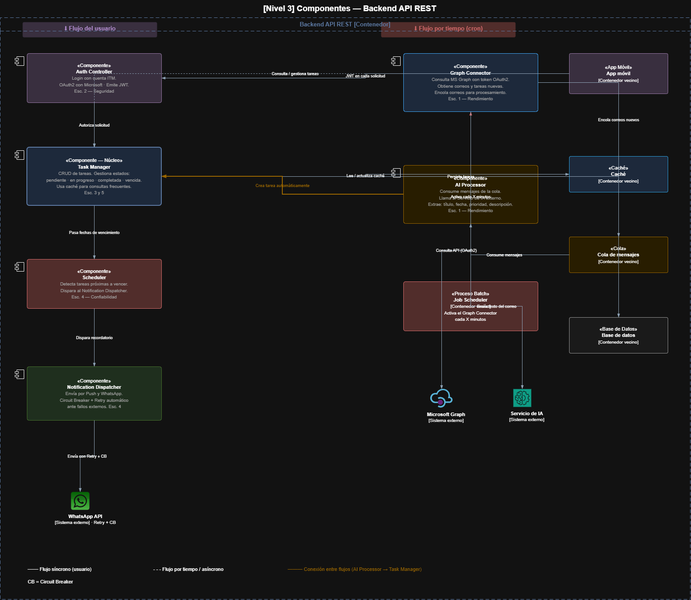

Gestión Académica Inteligente
Plataforma móvil inteligente diseñada para centralizar automáticamente actividades académicas obtenidas desde Microsoft Outlook y Microsoft Teams, utilizando Inteligencia Artificial para mejorar la organización, productividad y seguimiento académico de los estudiantes.
🌎 Contextualización del Dominio
La educación superior moderna depende cada vez más de plataformas digitales para la gestión de actividades académicas, comunicación institucional y seguimiento de tareas.
Herramientas como Microsoft Outlook y Microsoft Teams permiten distribuir actividades, evaluaciones, reuniones, eventos académicos y comunicaciones oficiales entre docentes y estudiantes.
Sin embargo, la información suele encontrarse distribuida en múltiples plataformas, dificultando la identificación de actividades prioritarias y aumentando el riesgo de olvidar compromisos académicos.
Este proyecto se enmarca dentro del dominio de Gestión Académica Inteligente, combinando aplicaciones móviles, servicios en la nube e Inteligencia Artificial para mejorar la organización y productividad de los estudiantes.
🎯 Problema Identificado
Actualmente los estudiantes del Instituto Tecnológico Metropolitano (ITM) reciben diariamente una gran cantidad de correos electrónicos institucionales y notificaciones provenientes de Outlook y Microsoft Teams.
Dentro de esta gran cantidad de información se encuentran actividades académicas importantes, fechas de entrega, reuniones, evaluaciones y avisos relevantes que frecuentemente pasan desapercibidos debido a la saturación de mensajes y notificaciones.
Consecuencias identificadas
- Olvido de entregas académicas.
- Retrasos en actividades importantes.
- Pérdida de oportunidades académicas.
- Desorganización y sobrecarga cognitiva.
- Dificultad para centralizar información.
- Disminución de la productividad estudiantil.
💡 Solución Propuesta
Se propone el desarrollo de una aplicación móvil inteligente capaz de centralizar automáticamente actividades académicas importantes provenientes del correo institucional y Microsoft Teams.
La solución integra un agente de Inteligencia Artificial encargado de analizar correos y tareas para identificar fechas de entrega, títulos, prioridades, descripciones y eventos académicos relevantes.
Una vez procesada la información, el sistema organiza automáticamente las actividades dentro de un calendario académico inteligente y genera recordatorios mediante múltiples canales de notificación.
👥 Actores y Sistemas Externos
👨🎓 Estudiante ITM
Usuario principal del sistema AcademiAlert.
- Consulta tareas académicas detectadas automáticamente.
- Gestiona estados de las tareas (pendiente, en progreso, completada y vencida).
- Visualiza el calendario académico inteligente.
- Recibe recordatorios y alertas automáticas.
📧 Microsoft Graph API
Sistema externo que proporciona acceso seguro mediante OAuth2 a los correos institucionales de Outlook y a las tareas de Microsoft Teams.
🤖 Servicio de Inteligencia Artificial
Analiza el contenido de los correos académicos para identificar actividades relevantes y extraer automáticamente títulos, fechas de entrega, prioridades y descripciones.
📱 WhatsApp API
Servicio externo utilizado para el envío de recordatorios automáticos sobre actividades próximas a vencer.
🔔 Firebase Cloud Messaging (FCM)
Servicio externo encargado del envío de notificaciones push directamente a la aplicación móvil del estudiante.
🎯 Objetivos del Sistema
Objetivo General
Desarrollar una aplicación móvil inteligente que centralice y gestione automáticamente actividades académicas relevantes obtenidas desde el correo institucional y Microsoft Teams mediante el uso de Inteligencia Artificial.
Objetivos Específicos
- Automatizar la detección de actividades académicas importantes.
- Centralizar tareas y eventos en un calendario único.
- Reducir el riesgo de olvido de entregas académicas.
- Mejorar la organización y productividad estudiantil.
- Generar recordatorios automáticos mediante múltiples canales.
- Facilitar el acceso a actividades pendientes desde dispositivos móviles.
⚙️ Funcionalidades Principales
- Registro e inicio de sesión mediante correo institucional.
- Integración con Microsoft Graph para Outlook y Teams.
- Procesamiento inteligente de correos mediante IA.
- Extracción automática de fechas, títulos y prioridades.
- Creación automática de tareas.
- Gestión CRUD de tareas.
- Cambio de estado (Pendiente, En Progreso, Completada y Vencida).
- Calendario académico inteligente.
- Notificaciones Push.
- Recordatorios mediante WhatsApp.
- Consulta permanente de actividades almacenadas.
🚧 Restricciones Relevantes
- Dependencia de Microsoft Graph API para acceder a correos y tareas.
- Dependencia de WhatsApp API para el envío de recordatorios.
- Conexión a Internet requerida para sincronización de información.
- Autenticación obligatoria mediante correo institucional.
- Limitaciones de disponibilidad y cuotas de servicios externos.
- Protección obligatoria de datos personales y académicos.
⚡ Escenario Arquitectónico 1 - Rendimiento
Procesamiento automático de correos mediante IA
Atributo de calidad: Rendimiento
Fuente del estímulo: Microsoft Graph API.
Estímulo: Se recibe un nuevo correo electrónico académico que contiene información sobre una actividad, evaluación o entrega.
Artefacto afectado: Servicio de Inteligencia Artificial y Servicio de Gestión de Tareas.
Entorno: Operación normal del sistema.
Respuesta esperada: El sistema analiza automáticamente el contenido del correo, identifica la información relevante (título, fecha, descripción y prioridad) y crea una tarea en el calendario académico del estudiante.
Tácticas Arquitectónicas Aplicadas
- 📨 Cola de mensajes (Message Queue).
- ⚡ Procesamiento asíncrono.
- 🔄 Background Jobs.
- 💾 Caché para consultas repetitivas.
- 🔗 Desacoplamiento del servicio de IA.
🛡️ Escenario Arquitectónico 2 - Seguridad
Seguridad de acceso a información académica
Atributo de calidad: Seguridad
Fuente del estímulo: Usuario no autorizado o atacante externo.
Estímulo: Intento de acceder a correos, tareas o información académica perteneciente a otro estudiante.
Artefacto afectado: Servicio de Autenticación, API Backend y Base de Datos.
Entorno: Ambiente de producción.
Respuesta esperada: El sistema valida la identidad del usuario, bloquea accesos no autorizados, registra el evento de seguridad y protege la información académica.
Tácticas Arquitectónicas Aplicadas
- 🔐 OAuth 2.0 con Microsoft.
- 🎫 Tokens JWT.
- 👤 Control de acceso basado en roles (RBAC).
- 🔒 HTTPS/TLS.
- 📋 Auditoría y monitoreo de eventos.
📶 Escenario Arquitectónico 3 - Disponibilidad
Disponibilidad de la aplicación
Atributo de calidad: Disponibilidad
Fuente del estímulo: Estudiante.
Estímulo: Consulta de tareas y calendario académico desde la aplicación móvil.
Artefacto afectado: Aplicación móvil, API Backend y Base de Datos.
Entorno: Operación normal y periodos de alta demanda académica.
Respuesta esperada: El sistema permanece operativo y responde a las solicitudes sin interrupciones perceptibles.
Tácticas Arquitectónicas Aplicadas
- ⚖️ Balanceo de carga.
- ❤️ Health Checks.
- 🖥️ Réplicas de servicios críticos.
- ♻️ Recuperación automática ante fallos.
- 📈 Monitoreo centralizado.
🔔 Escenario Arquitectónico 4 - Confiabilidad
Envío confiable de recordatorios
Atributo de calidad: Confiabilidad
Fuente del estímulo: Programador de tareas (Scheduler).
Estímulo: Una actividad académica está próxima a vencer.
Artefacto afectado: Servicio de Notificaciones y WhatsApp API.
Entorno: Operación normal o fallos temporales de servicios externos.
Respuesta esperada: Garantizar el envío del recordatorio incluso ante fallos temporales de proveedores externos.
Tácticas Arquitectónicas Aplicadas
- 📨 Message Queue.
- 🔄 Retry Pattern.
- 💾 Persistencia de eventos pendientes.
- 🛑 Circuit Breaker.
- ✅ Confirmación de entrega.
📈 Escenario Arquitectónico 5 - Escalabilidad
Escalabilidad para miles de estudiantes
Atributo de calidad: Escalabilidad
Fuente del estímulo: Incremento de usuarios registrados.
Estímulo: El número de estudiantes activos aumenta de cientos a miles durante periodos académicos.
Artefacto afectado: Backend API REST, Base de Datos y Servicios de Integración.
Entorno: Alta concurrencia y crecimiento del sistema.
Respuesta esperada: Mantener tiempos de respuesta aceptables sin degradar significativamente el rendimiento.
Tácticas Arquitectónicas Aplicadas
- ⬆️ Escalamiento vertical.
- ⚖️ Balanceo de carga.
- 💾 Caché para consultas frecuentes.
- 🗄️ Indexación y optimización de consultas.
- 🏗️ Arquitectura monolítica por capas.
⚖️ Trade-Offs Arquitectónicos
| Decisión Arquitectónica | Beneficio | Compensación / Costo |
|---|---|---|
| Procesamiento Asíncrono + Queue | Mejora el rendimiento y evita bloqueos. | Incrementa complejidad operativa y monitoreo. |
| Caché | Reduce tiempos de respuesta. | Posibles datos temporalmente desactualizados. |
| OAuth 2.0 + JWT | Mayor seguridad y control de acceso. | Proceso de autenticación más complejo. |
| Balanceo de Carga | Mayor disponibilidad y tolerancia a fallos. | Mayor costo de infraestructura. |
| Integración con IA | Automatiza la identificación de actividades. | Dependencia de servicios externos y costos asociados. |
📋 C4 Nivel 1 - Contexto

🗂️ C4 Nivel 2 - Contenedores

🧩 C4 Nivel 3 - Componentes

✅ Conclusiones
La aplicación de Gestión Académica Inteligente responde a una necesidad real de los estudiantes del ITM, quienes actualmente enfrentan dificultades para gestionar la gran cantidad de información académica distribuida entre Outlook y Microsoft Teams.
Mediante la integración de Inteligencia Artificial, la solución permite identificar automáticamente actividades relevantes, centralizarlas en un calendario académico inteligente y generar recordatorios oportunos, contribuyendo a mejorar la organización, productividad y seguimiento de las responsabilidades académicas.
La arquitectura propuesta fue diseñada considerando atributos de calidad críticos como rendimiento, seguridad, disponibilidad, confiabilidad y escalabilidad, los cuales fueron validados mediante escenarios arquitectónicos específicos y respaldados por tácticas arquitectónicas adecuadas.
Finalmente, el modelo C4 permitió documentar la solución desde diferentes niveles de abstracción, facilitando la comprensión de la arquitectura, la comunicación entre los interesados y la evolución futura del sistema a medida que aumente la cantidad de usuarios y funcionalidades.